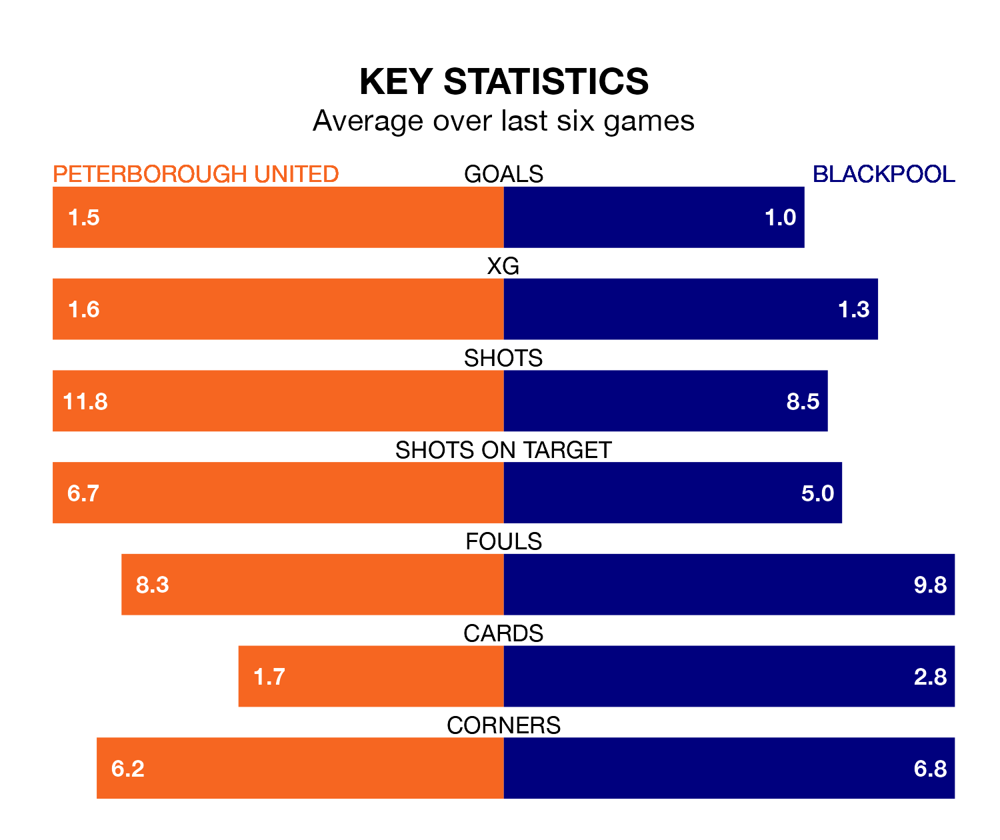

Peterborough United welcome Blackpool to the Weston Homes Stadium on Saturday looking to pick up points to end their three-game losing streak.
Peterborough's struggles have left them with seven points from their last six EFL League One matches, while their opponents have earned eight from a possible 18.
With 59 goals in 31 games so far this season, Peterborough are the league's highest scorers with 1.9 goals per game. And they are conceding at an average rate, letting in 39 goals at a rate of 1.3 per game.
Blackpool are also above average scorers, with 1.5 goals per game, compared to a league average of 1.3. They have conceded 1.2 goals per game.
In the last 10 years, Peterborough and Blackpool have played each other on 12 occasions. Peterborough won four of them, Blackpool six, and they drew twice.
On average, the Posh scored 2.0 goals and the Seasiders 1.8 in those matches.
Their last meeting was on October 28, when Peterborough won 4-2 away.
With Daniel Grimshaw between the sticks, the Seasiders can rely on one of the league's safest pair of hands. He has kept 11 clean sheets in his 31 appearances this season, and only two other 'keepers – Portsmouth's Will Norris and Bolton Wanderers' Nathan Baxter – have been able to prevent the opposition scoring on more occasions in EFL League One.
In United's net, Nicholas Bilokapic has 10 clean sheets in 27 games. He has conceded a goal every 76 minutes, 10% more often than the 80 minutes between goals for Grimshaw.
The Posh are fifth in the table after 31 games, of which they have won 16 and drawn eight, earning 56 points.
The visitors are four places behind the home team in ninth, with 13 wins and eight draws putting them on 47 points.
Peterborough's last match was on February 10, a 5-2 loss against Wycombe Wanderers, with David Ibukun Ajiboye and Ricky Jade-Jones getting the goals for the Posh.
Blackpool lost 2-0 against Cheltenham Town last time out, on Tuesday.
Updated: 12:06 (UTC), 15/02/24